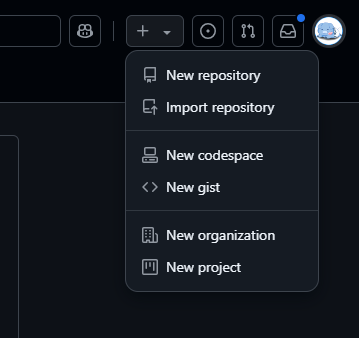
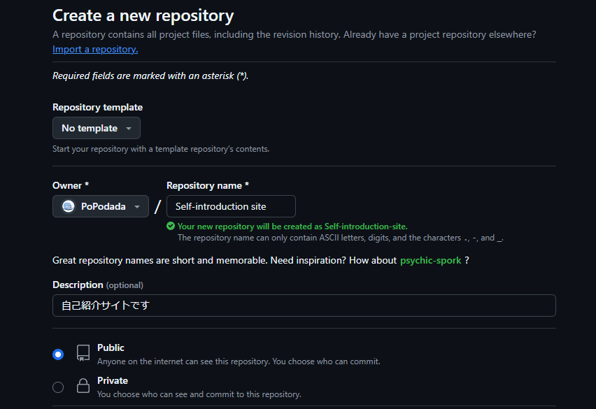
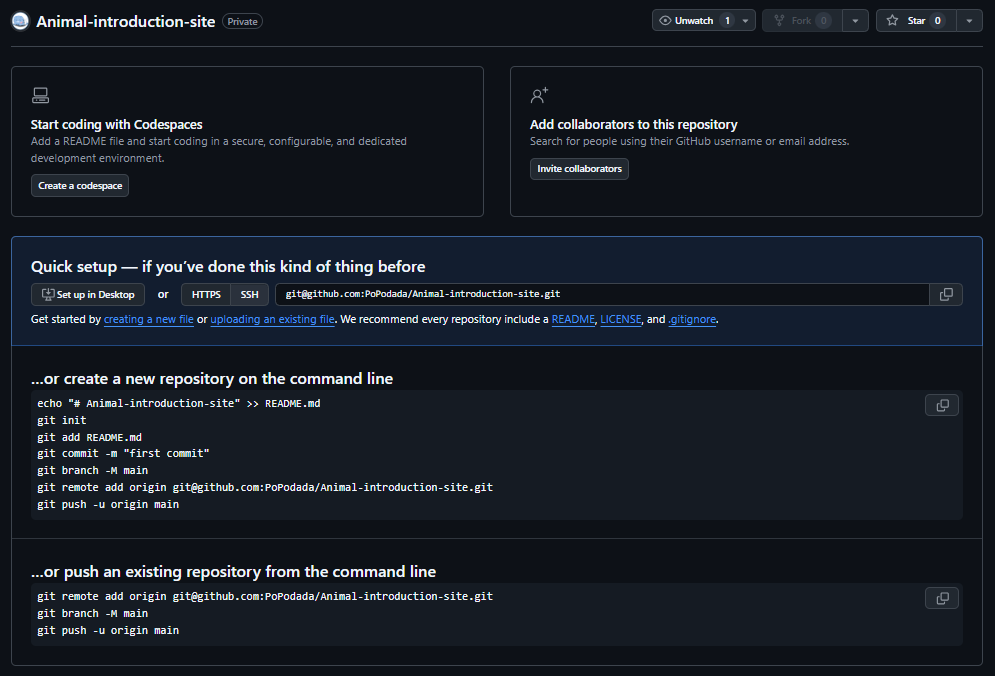
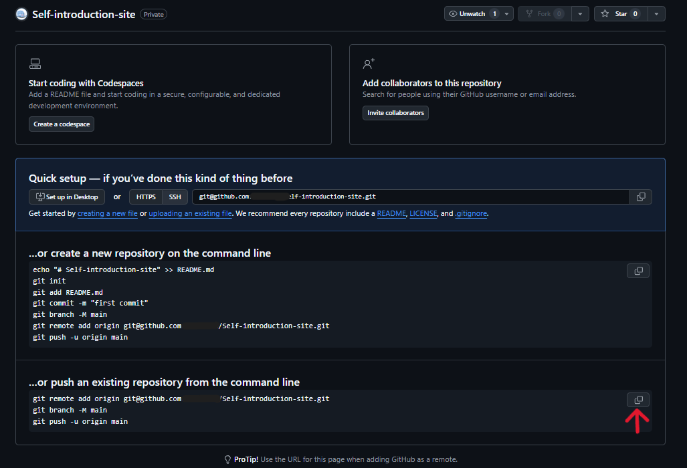

解説
Githubでリポジトリを作成する
Githubにアクセスし、ページの右上隅で+を選択して「New repository」をクリックします。

今回は、Repository nameのところに「Self-introduction site」、Descriptionのところに「自己紹介サイトです」と記述しましょう。
最後に緑色のボタンの「Create repository」を押してリポジトリを作成してください。
すると下記のようなページが表示されるはずです。
作業する人の情報を登録する
自己紹介サイトのフォルダをVSCodeで開いた後にCtrl+jを押してターミナルを表示しましょう。
プロジェクトで作業する人の情報をGitに教える必要があります。
下記のコマンドを1行ずつ実行しましょう。
git config --local user.name "自分の名前"
git config --local user.email "Githubのメールアドレス"
プロジェクトフォルダの初期化をする
git initを使用して自己紹介サイトのフォルダをGitの管理対象にします。

git init
git initと入力し初期化を行いましょう。
変更を追加した内容を選択する
git addを使用して次のコミットにて記録する内容を選択します。
git add .
git addと入力し次のコミットにて記録する内容を選択しましょう。 addの後に.(ドット)を使用することによって、すべての変更を保存したい内容として選択することができます。
コミットをして追加した内容を記録する
git commitを使用してaddにて追加した内容がどういった内容なのか説明を加え記録します。
git commit -m "初めのコミット：自己紹介サイト"
Githubに追加した変更をアップロードする
リポジトリを作成したときに表示されたページから赤の矢印の部分を押して、コピーを行ってください。
コピーした内容をすべてターミナルにて実行しましょう。
git remote add origin git@github.com:xxxxx/Self-introduction-site.git
git branch -M main
git push -u origin main
pushをした内容がGithubにて確認することができればpushに成功しています。